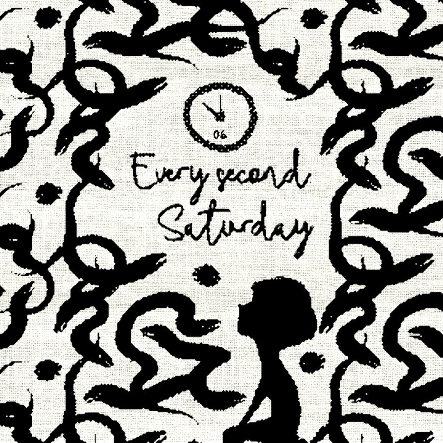

Yarn 07 / Season 1 / May 21, 2018 / 10 min
Every Second Saturday
An emotional short story about the effect divorce and shared custody has on children and parents.
- Written and narrated by John Roche

Yarn 07 / Season 1 / May 21, 2018 / 10 min
An emotional short story about the effect divorce and shared custody has on children and parents.